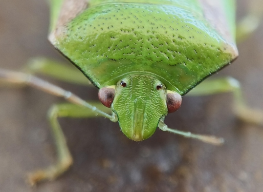

Es un insecto de cuerpo ovalado, aplanado y con forma de escudo, generalmente de color verde brillante. Presenta antenas de cinco segmentos y un aparato bucal picador-chupador con el que se alimenta de la savia y los tejidos de las plantas. Cuando se siente amenazado, puede liberar una sustancia de olor desagradable como mecanismo de defensa.